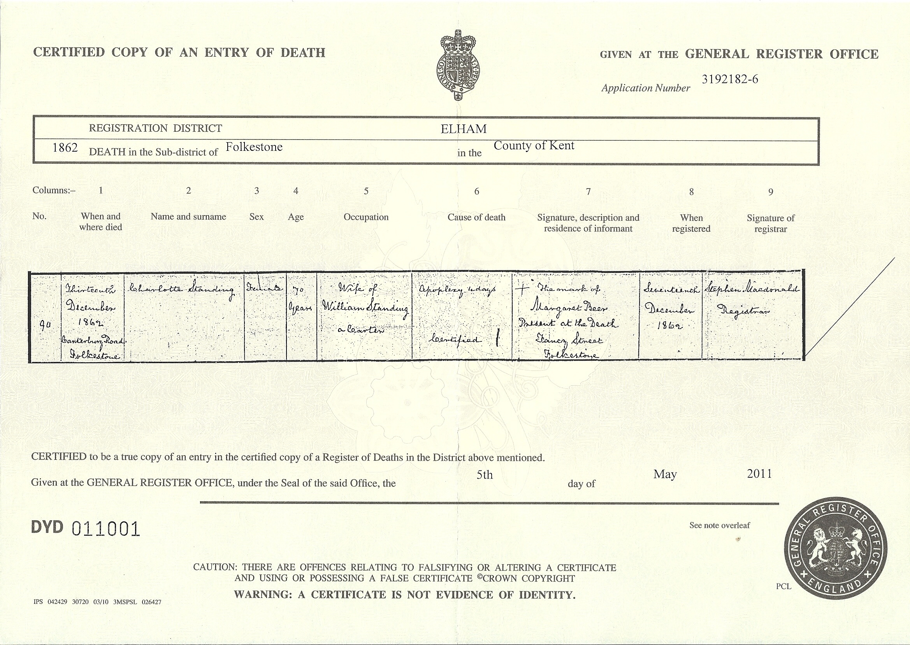
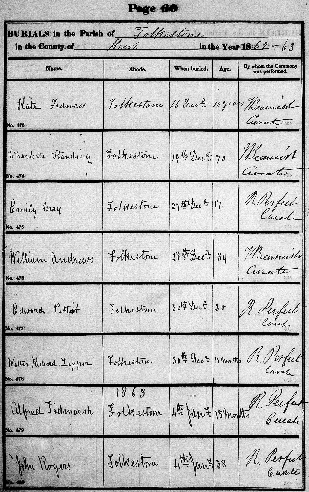
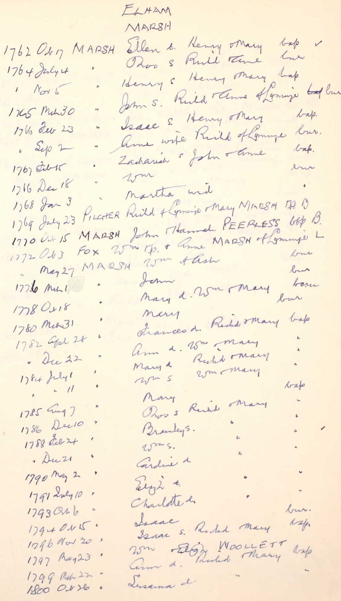
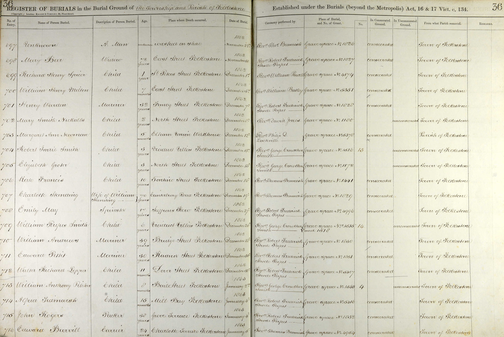
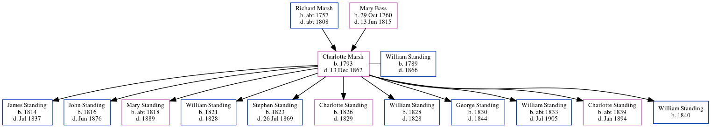

Charlotte Standing (née Marsh) 1793 - 1862
[ Home ] | [ Calendar ] | [ Surnames Index ] | [ Errors ] | [ Family History ]The child of Richard Marsh and Mary Bass, Charlotte Marsh, the four times great-aunt of Nigel Horne, was born in Elham, Kent, England in 17931,2, was baptised there on 6 Oct 1793 and married William Standing (an agricultural labourer with whom she had 11 children: James, John, Mary Ann, William, Stephen, Charlotte, William, George, William Henry, Charlotte Ann and William) in Folkestone, Kent, England on 29 Sept 18134.
During her life, she was living at Lime Kiln Cottage, Dover Road in Folkestone on 6 Jun 18416; in Folkestone in 18511; and at Dover Road in Folkestone on 30 Mar 18515 and on 7 Apr 18617.
She died on 13 Dec 1862 at Canterbury Road in Folkestone3 (apoplexy) and was buried at Cheriton Road Cemetery, Folkestone on 19 Dec 1862.
Parents
- Richard was born c. 1757
- Mary was born on 29 Oct 1760
Children
- James was born in 1814
- John was born in 1816
- Mary Ann was born c. 1818
- William was born in 1821
- Stephen was born in 1823
- Charlotte was born in 1826
- William was born in 1828
- George was born in 1830
- William Henry was born c. 1833
- Charlotte Ann was born c. 1839
- William was born in 1840
Citations
- 1851 England Census Online publication - Provo, UT, USA: The Generations Network, Inc., 2005.Original data - Census Returns of England and Wales, 1851. Kew, Surrey, England: The National Archives of the UK (TNA): Public Record Office (PRO), 1851. Data imaged from the National (Relation to Head of House: Wife)
- Kent, England, Tyler Index to Parish Registers, 1538-1874 Online publication - Provo, UT, USA: Ancestry.com Operations, Inc., 2010. This collection was indexed by Ancestry World Archives Project contributors.Original data - Frank Watt Tyler. The Tyler Collection. Canterbury, Kent, England: The Institute of Herald
- England & Wales, FreeBMD Death Index: 1837-1915 Online publication - Provo, UT, USA: The Generations Network, Inc., 2006.Original data - General Register Office. England and Wales Civil Registration Indexes. London, England: General Register Office. © Crown copyright. Published by permission of the Cont
- England Marriages 1538-1973 - Findmypast
- 1851 England, Wales & Scotland Census - Findmypast (was age 58 and the wife of the head of the household)
- 1841 England, Wales & Scotland Census - Findmypast (was age 45)
- 1861 England, Wales & Scotland Census - Findmypast (was age 69 and the wife of the head of the household)
Media
Caroline Marsh - death certificate

Charlotte Marsh - burial

1851 UK Census

Charlotte Marsh - baptism

1841 UK Census

Charlotte Marsh - burial record

England Marriages 1538-1973 - R_848170114/2
England Marriages 1538-1973 - R_848366592/2
England Marriages 1538-1973 - R_848367264/2
Kent, Canterbury Archdeaconry burials 1538-1988 - GBPRS/CANT/D/95111003
England & Wales deaths 1837-2007 - BMD/D/1862/4/SZ/000143/019
1841 England, Wales & Scotland Census - GBC/1841/0014080810
1851 England, Wales & Scotland Census - GBC/1851/0005968685
1861 England, Wales & Scotland Census - GBC/1861/0003617958
Family Tree
Map
Generated by ged2site. Last updated on Jul 3, 2024
Known Issues
Date of baptism (6 Oct 1793) before date of birth (1793)
Burial date (19 Dec 1862) has no citations